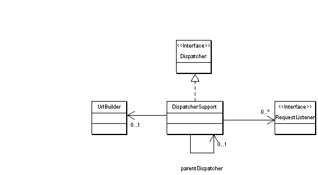

Allows to register RequestListeners that are notified on user actions.
For example, RequestListeners may be registered for submit buttons
or anchors (<a href="...">)
Dispatchers and RequestListeners
RequestListeners are classes that want to receive event notifications
on some http requests. For example, RequestListeners may be registered for
a specific URL of a <a href=".." > -- the Listener will be invoked, whenever
the user clicks on that anchor. Another example is a button of a form, there may
be one RequestListener for every button.
A RequestListener can receive notifications
for requests, that contain
- a specific name/value pair
- a specific name with arbitrary value (e.g. for HTML <INPUT type="button" ...>
- a specific value with arbitrary name
A Dispatcher determines the RequestListeners from the
request parameters (name/value pairs) and notifies the matching RequestListeners.
Dispatchers may be nested. A child dispatcher, that has been added to a parent
dispatcher via addRequestListener(), will respond to all requests that it receives
from its parent and will dispatch these to its listeners. Common usage is to
have a single root dispatcher (front controller) in the controller servlet, that receives all requests.
The next dispatcher in the hierarchy dispatches on pages, the next one on
forms and the last one on form buttons. Any hierarchy may be choosen and encoded
into url parameters.
Class Diagram

Front Controller Implementation
The Controller is implemented by RequestFilter
and SessionListener.
The Controller provides access to a Dispatcher and optionally
forwards to the next view.
RequestFilter
and SessionListener should be accessed thru Controller
and not directly.